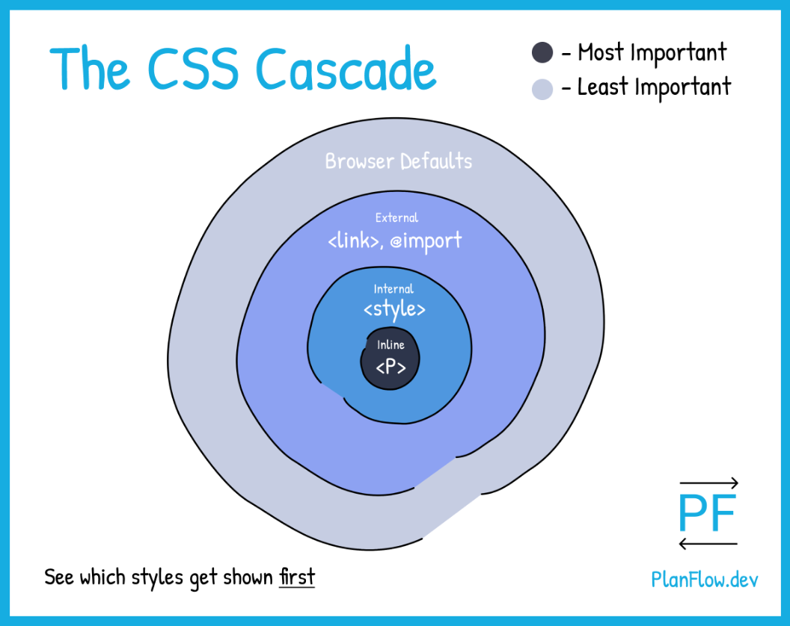

Cascading in CSS
- The process of combining several style sheets or several palce of declaration.
- We could resolve conflicts between them
- If there are multiple selectors with same origin & specificity then one that appears at the end wins..
- Origin : Browser Default, External CSS, Internal CSS, In-line CSS
- Read More...
